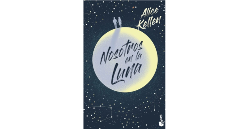

| Nosotros en la luna | La teoría de los archipiélagos | El mapa de los anhelos |
|---|---|---|
|  | ||
Cuando Rhys y Ginger se conocen en las calles de la ciudad de la luz, no imaginan que sus vidas se unirán para siempre, a pesar de la distancia y de que no puedan ser más diferentes. Ella vive en Londres y a veces se siente tan perdida que se ha olvidado hasta de sus propios sueños. Él es incapaz de quedarse quieto en ningún lugar y cree saber quién es. Y cada noche su amistad crece entre emails llenos de confidencias, dudas e inquietudes. Pero ¿qué ocurre cuando el paso del tiempo pone a prueba su relación? ¿Es posible colgarse de la luna junto a otra persona sin poner en riesgo el corazón? Una historia sobre el amor, el destino y la búsqueda de uno mismo. Porque a veces, solo hace falta mirar la luna para sentirte cerca de otra persona. |
La teoría de los archipiélagos viene a decir que todos somos islas, llegamos solos a este mundo y nos vamos exactamente igual, pero necesitamos tener otras islas alrededor para sentirnos felices en medio de ese mar que une tanto como separa. Yo siempre he pensado que sería una isla pequeñita, de esas en las que hay tres palmeras, una playa, dos rocas y poco más; me he sentido invisible durante gran parte de mi vida. Pero entonces apareciste tú, que sin duda serías una isla volcánica llena de grutas y flores. Y es la primera vez que me pregunto si dos islas pueden tocarse en la profundidad del océano, aunque nadie sea capaz de verlo. Si eso existe, si entre los corales y sedimentos y lo que sea que nos ancla en medio del mar hay un punto de unión, sin duda somos tú y yo. Y, si no es así, estamos tan cerca que estoy convencido de poder llegar nadando hasta ti. |
¿Y si te diesen un mapa para descubrir quién eres? ¿Seguirías la ruta marcada hasta el final? Imagina que estás destinada a salvar a tu hermana, pero al final ella muere y la razón de tu existencia se desvanece. Eso es lo que le ocurre a Grace Peterson, la chica que siempre se ha sentido invisible, la que nunca ha salido de Nebraska, la que colecciona palabras y ve pasar los días refugiada en la monotonía. Hasta que llega a sus manos el juego de El mapa de los anhelos y, siguiendo las instrucciones, lo primero que debe hacer es encontrar a alguien llamado Will Tucker, del que nunca ha oído hablar y que está a punto de embarcarse con ella en un viaje directo al corazón, lleno de vulnerabilidades y sueños olvidados, anhelos y afectos inesperados. Pero ¿es posible avanzar cuando los secretos comienzan a pesar demasiado? ¿Quién es quién en esta historia? |